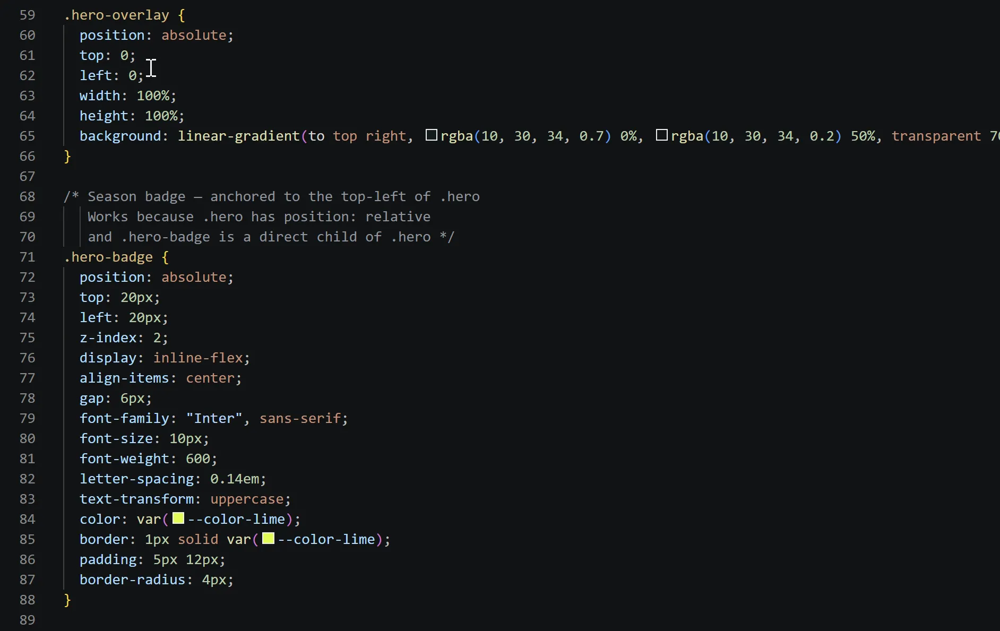
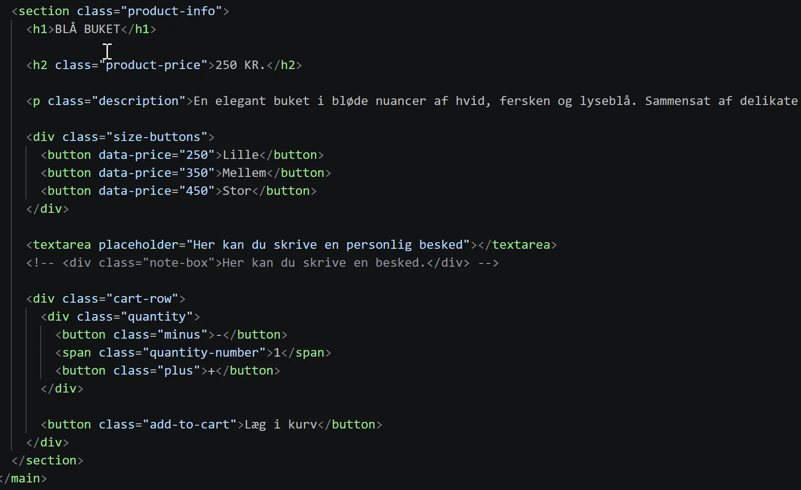
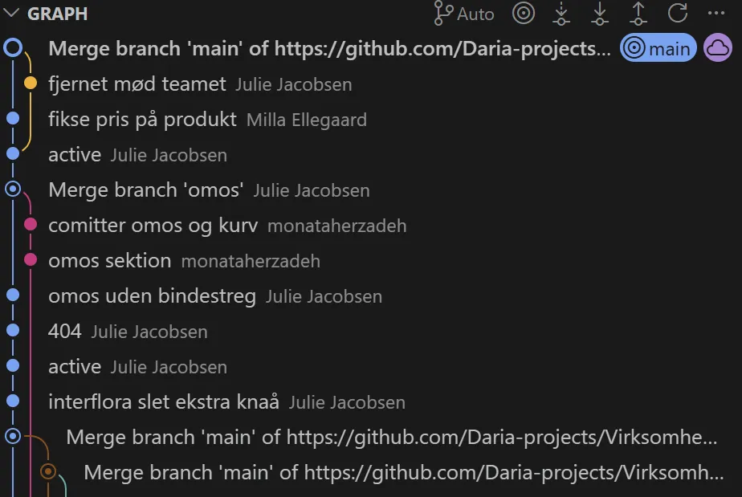

Tema 5 - Brugergraensefladeudvikling
Hvad lavede jeg?
Tema 5 var vores første gruppeopgave. Opgaven gik ud på at komme i kontakt med en virksomhed, som havde brug for en ny hjemmeside, som vi så skulle lave til dem. Det var en længere opgave, hvor vi lærte meget om gruppearbejde og hvordan det foregår i VScode.



Processen
En stor del af processen var at kommunikere og fordele opgaver, som vi brugte trello til. Under opgaven mødtes vi så ofte som vi kunne, og ellers var vi gode til at kommunikere online, så vi var sikre på at alle var med og fik lavet det de skulle.
Jeg blev introduceret til:
- Branches i VScode
- Kommunikation mellem udvikler og virksomhed
- Push and Pull
Jeg lærte:
- Hvordan man har god kommunikation i en gruppe
- At samarbejde om et site
- At merge alle branches sammen
Refleksioner:
- Overblik er vigtigt når man arbejder sammen om at kode
- Opdel opgaver og fokus så ingen gruppe medlemmer bliver overvældet
- Det er vigtigt at arbejde i hver sin branch
- Det er vigtigt altid at committe det man har lavet